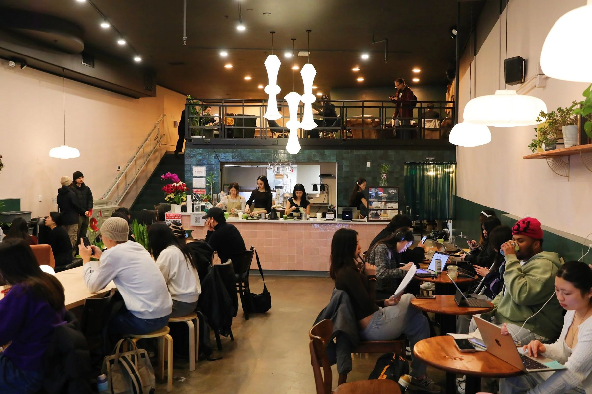
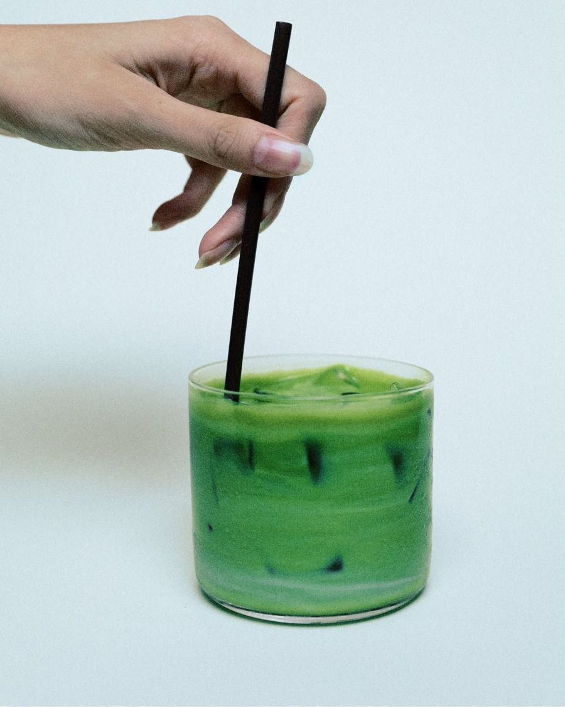
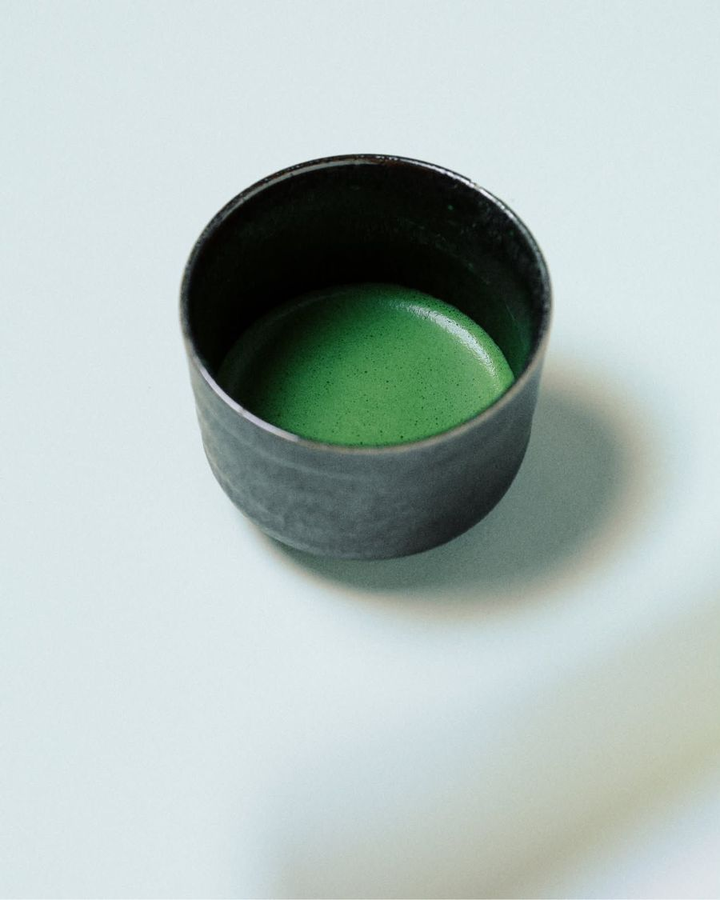

University District · Open Daily 9AM–2PM
You deserve good matcha.
See the menuOur Story
thoughtfully sourced.
house-made.
every day.
GREAN is a neighborhood matcha café in Seattle's University District.
We serve thoughtfully sourced specialty matcha and hojicha, plus house-made bites, every day from 9AM to 2PM.
You deserve better matcha. Stop in for a cup.
What We Serve
Matcha, hojicha, and something sweet to go with it.
01
Ceremonial blend matcha, a rich Saemidori and Okumidori cultivar stone ground from Nishio, Aichi in Japan.
02
Two distinct hojicha, handpicked green tea leaves roasted over white charcoal in Uji & Yame.
03
Signature in-house bakes and pastries, from basque cheesecake to pandan honeycomb cake.
Find Us
Daily · 9AM–2PM
4524 University Way NE
Seattle, WA 98105
Inside Elixir Dessert & Bar
While GREAN is open daily from 9AM to 2PM, the space stays open beyond café hours as it converts over to Elixir, a business we share the space with.
See the menu
Questions
GREAN is inside Elixir Dessert & Bar at 4524 University Way NE, Seattle, WA 98105.
We're open daily from 9AM to 2PM. The space stays open later as it converts over to Elixir.
Specialty matcha, hojicha, and house-made bites. See the menu for what's on today.
Yes. The network is ElixirGrean and the password is TreatYoSelf!
We're @drinkgrean on Instagram.

Get In Touch
Questions, collaborations, press, or just want to say hi?
Wifi
ElixirGrean
Password
TreatYoSelf!